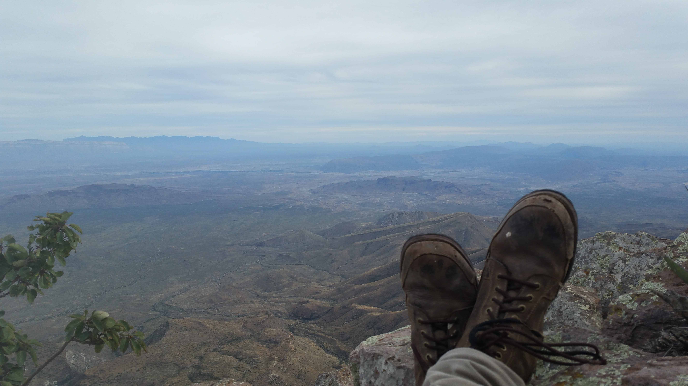

NOVEMBER 11 WAS MY LAST POST. Can you believe that?! Actually, I can... as I've said, not too great at this blogging thing.
As you'll be able to read about in a shortly-upcoming post (I swear, I'll write it soon!), I'm going to modify my writing style to hopefully document more of this trip and have less of these massive gaps in time... it'll be less text-dumpy, but hopefully that's fine :)
So, in the past FOUR MONTHS we've obviously done quite a bit. Here's a flash-recap:
In Florida we celebrated my cousin Michelle's marriage to my new cousin Paul, caught up with my family, and partied it up. We headed to Jacksonville from there, visiting Lacey's high school friend Paul, who hosted us for a few days. Then it was south to Orlando to work a little at ESPN Wide World of Sports, and south further to see Lacey's grandmother at Palm Beach. We celebrated Thanksgiving on Miami Beach, then headed down the Keys (all the way to Key West) for a few weeks. After that, it was back up the gulf coast to Tampa, to visit Lacey's friend Grey. North along the Gulf to the Forgotten Coast to check out St. Mark's National Wildlife Refuge, then west and back to my uncle's! He was a very generous host and let us recuperate after our month-long tour of Florida.

A sinkhole at Leon Sinks Geographical Area
From there we headed west along the Gulf and into New Orleans. We both fell in love with the city as we partied and explored across it, staying at the India Guest House (I VERY MUCH RECOMMEND THIS HOSTEL IF YOU'RE IN LOUISIANA!), and we can't wait to return and spend more time there.
We then got BACK on the Natchez Trace Parkway, taking it northeast through Mississippi towards Alabama. We stopped at the cute town of Natchez for a sunset lunch, then struck due-west towards Tejas.
Texas was a state we were very surprised by--we loved it! The pine-belt of eastern Texas wasn't ideal, but Dallas and Houston were both much prettier than we expected... we celebrated Christmas at a steakhouse in Dallas, hell yeah! From Houston we headed south along the coast, discovering old ghost towns like Indianola hidden all along a surprisingly warm and pristine coastline. We struck north from Corpus Christi and made it to San Antonio for New Year's--which was an AWESOME time, partying at the Alamo--then spent a week staying at my friend Stefan's place in Austin. He and his friends took us around the city, and we did a bit of exploring ourselves! Another city we're very excited to return to, and one of the first we actually considered moving to when we settled down again...

Austin's Graffiti Park, AKA Hope Gallery
After Austin, we drove across the massive nation of Texas to Big Bend National Park. This was - thusfar - our favorite place of the entire trip.
It was like two parks in one, with the desert expanding for miles until beautiful, sheer cliffs ended it like walls; and the Chisos mountains towering above all solemn and green. We went hiking, hung out in a Mexican village, met fellow vandwellers in the lodge and the hot-springs, slept on mountains, peered into canyons, and met a coyote! Big Bend is truly one-of-a-kind, and we loved experiencing it. I hope to return someday soon.
View from our campsite
After Big Bend was El Paso to recuperate (it was about 2 weeks in Big Bend, no shower or laundry...), then north into New Mexico to Carlsbad Caverns. We ran into Teddy, a friend we had made just a week before at Big Bend! We explored the caverns with Teddy, before we split ways again to explore New Mexico before we'd later meet again. Roswell, the Mescalero Reservation, White Sands, Las Cruces, Gila Cliff Dwellings, Bosque Del Apache (with America's #7 burgers!), and finally Albuquerque for the Petroglyph National Monument! Thousands of rock carvings dating back nearly a millenium. Pretty dope. Then we crawled through a lava tube in El Malpais and walked around El Morro.

The Spanish called it "El Morro," the Headland
After New Mexico we rendezvous'd with Teddy at Petrified Forest National Park, in Arizona. Another contender for favorite places thusfar, the entire place is littered with brilliantly-colored stones in the shape of fallen trees--because they are petrified, fallen trees. Truly surreal place to see and explore. We got acquainted with the local town (inspiration for Disney-Pixar's Cars!), a raven at the campsite, and some of the off-the-trail hikes. After that, we headed to Flagstaff, which we had both heard good things about. We discovered one of the best restaurants ever (Sosoba, check it out if ever you're in Arizona), and also explored Jerome and Prescott, AZ, on a two-day trip to see Maynard James Keenan (of Tool)'s wine shop. The countryside of southern Arizona is incredible - but everywhere in the southwest has very stark differences in altitude (and therefore climate) that create these fantastic scenes that unfold for hundreds of miles. Makes for great driving. We headed back to Flagstaff, checked out the nearby cliff dwellings at Walnut Canyon and Wupatki National Monuments (passing by and hiking Sunset Crater in between) and went for the Grand Canyon.

Check out that view!
After the blind first day, we got to explore. We were blown away! Pictures don't do it justice at all. We met with Teddy again, to hike to the bottom, camp, and hike up again. If you're physically fit, I really recommend hiking the Grand - even if you don't go to the bottom (you should) - less than 1% of visitors go 'below the Rim', or outside of the tourist area on the edge. We had an incredible time and met some really crazy characters.
After we surfaced the Grand, we drove back to Flagstaff (literally as soon as we got to our cars, "SOSOBA!" was the battle cry) and slept over. The next day we headed all the way to the Hoover Dam, and Vegas beyond. We were very touch-and-go with the city, not looking to spend all our [little] funds on gambling. But we enjoyed our time, camping along Lake Meade and driving through the stark Red Rocks.
At last, we crossed into the west coast (or at least a state along it) passing into California near Death Valley. We spent a few days hiking there, through dunes and canyons, and even met the creator of the 'COEXIST' sticker! We bought him a drink, and he gave us some free stickers. Good deal. We saw the lowest point in the US, at Badwater Basin, and some very cool slot canyons. We were forced to leave the park early, because of the coming rainstorm (if you didn't know, deserts get blasted by rain. Everything floods.) and headed south to my dad's house in the Coachella Valley, where we've been for a few weeks.
Mileage: 13000
Weather: Sunny, hazy, 96F
Currently listening to: SBTRKT - SBTRKT